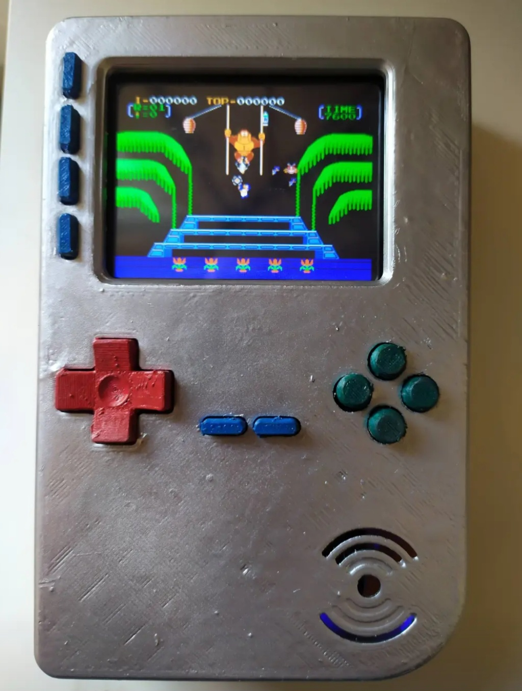
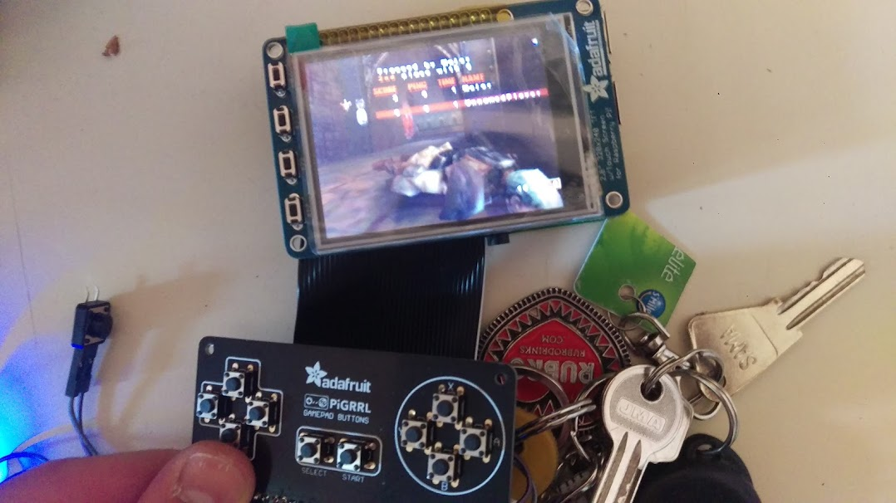
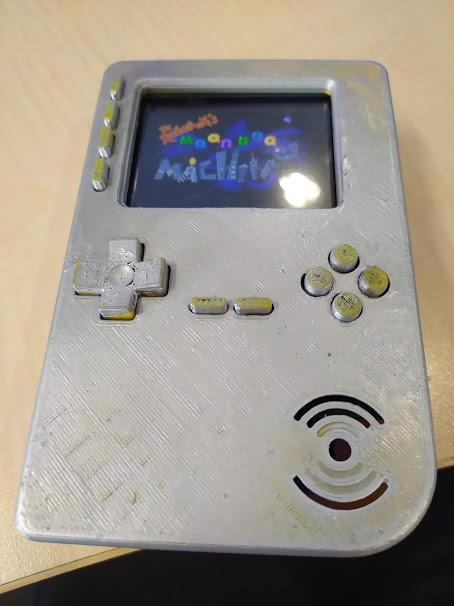
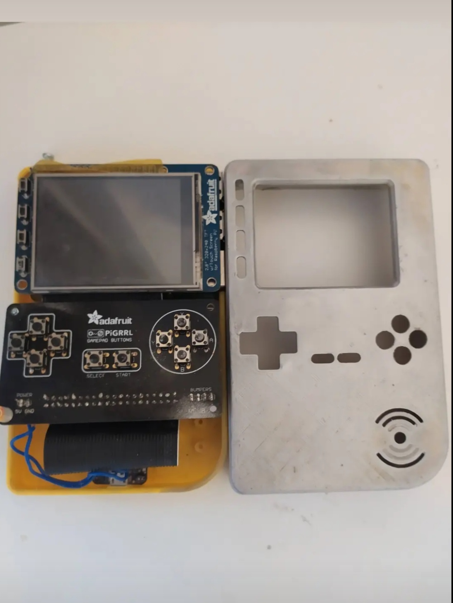
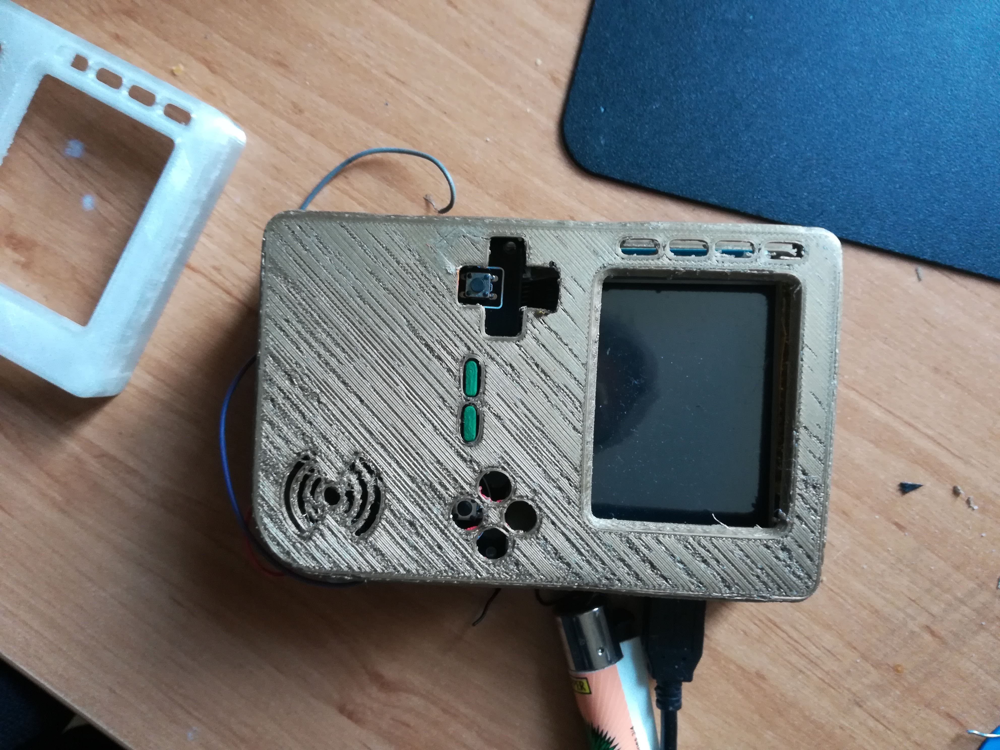

A 3D-printed handheld in the Game Boy silhouette. Arduino brain, small LCD, buttons, speaker — running a Mario clone. Below: the finished piece in motion, then the build gallery from assembly to final paint.




